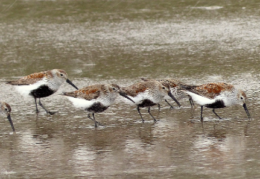

Dunlin (Calidris alpina)

Dunlin - Hazen, Stephanie1
Description: A member of the Sandpiper family, Dunlins are about 8 inches long and weigh about 2 ounces. They have long, down-curved black bills, and black legs. Non-breeding adults have grayish-brown backs and pale bellies. Breeding adults have a russet back and crown, and a black belly. Juveniles are browner.
Migration & Habitat: Dunlins winter in large flocks along coastal beaches, bays, estuaries, tidal flats, flooded fields, and wetlands. In Oregon, they winter along the coast and in the Willamette Valley. They migrate north in spring to nest on arctic and subarctic wet tundra.
Reproduction: Male Dunlins arrive first on the breeding ground and choose the nest site. The nest consists of a depression on the ground hidden in vegetation, lined with leaves and grasses. Females lay 3 to 4 eggs. The eggs hatch after about 3 weeks and the downy young leave the nest soon after.
Diet: Dunlins eat mostly invertebrates, such as small mollusks, insects, and earthworms
Conservation Status: Dunlin populations are rated of low concern worldwide, however, they have declined on wintering grounds in the Northwest.
Distribution, subspecies, migration patterns and European wintering areas of the Dunlin (Calidris alpina), Christof Bobzin 2
Prepared by Sue Geniesse
Credits:
1Title: Dunlin Credit: Hazen, Stephanie
Rights: Copyrighted, All Rights Reserved, Personal permission granted.
2Distribution, subspecies, migration patterns and European wintering areas of the Dunlin
(Calidris alpina), (Christof Bobzin)
Source: Retrieved April 16, 2023, from
https://en.wikipedia.org/wiki/Dunlin#/media/File:Calidris_alpina_migrations.png Rights: CC BY 3.0
Marshall, D. B., M. G. Hunter, and A. L. Contreras, Eds. 2003, 2006. Birds of Oregon: A General Reference.
Oregon State University Press, Corvallis, OR. 768 Pp.
Nehls, Harry, Tom Aversa, and Hal Opperman. 2004. Birds of the Willamette Valley Region. R. W. Morse Co., Olympia, WA. 390 Pp.